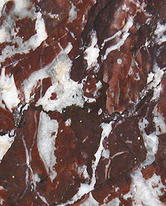

Les
marbres
Les marbres sont une famille de minéraux
métamorphiques
à base de calcite. Ils
résultent de la transformation métamorphique de
calcaires.
Ils sont plus solides et plus homogènes que ceux-ci ou que les
albâtres
qui peuvent parfois présenter un aspect similaire. Ils sont
modérément opaques et ont un grain fin.
Pour ces raisons,
ils ont été très prisés dès l'Antiquité et encore davantage à partir de
la Renaissance. Peut-être excessivement.
|
Catégories
Polissage,
transparence
Carrières,
localisation |
Au XIXème siècle, la seule pierre
envisageable pour la sculpture était un marbre blanc de Carrare, censé
ressembler au substrat des oeuvres de la Grèce antique (les fameux Paros, Pentélique, Scio
ou Naxos) - compensation liée à
une période marquée par un manque de repères esthétiques ?

Les choses ont un peu changé : après cette période de retour aux
sources, beaucoup de sculpteurs se sont progressivement intéressés aux
variétés noires (marbre belge notamment) et aux marbres légèrement veinés,
considérés pourtant encore à ce jour comme "demi-statuaires",
c'est-à-dire blancs comme les "statuaires", mais traversés de
discrètes pigmentations jaunes, violacées, etc., voire aux marbres franchement
veinés, micacés, impurs, auparavant réservés aux usages décoratifs.
La richesse "picturale" d'un
marbre veiné ou micacé est souvent si grande qu'il n'est pas forcément aisé
de s'accommoder de son expressivité. Le sculpteur contemporain en tient compte.
Il agit souvent sur la pierre comme un peintre sur un tableau déjà plus
qu'ébauché, d'une manière moins volontaire que dans le passé. Il regarde, il
"écoute" le minéral qu'il a choisi, pas celui que la convention ou la mode ont
choisi.
Note : "marbre" (du grec
marmoros) donne l'adjectif "marmoréen" et d'autres mots similaires dans
plusieurs langues, dont des noms de lieux.
Catégories
Il existe deux grandes catégories de marbres :
* les marbres calciques, plutôt lourds.
*
les marbres
dolomitiques. Ils sont issus de la métamorphose de la dolomie,
une pierre calcaire assez particulière.
Entre elles, il existe des compositions intermédiaires, mais même si l'on
ne considère que les deux extrêmes, ceux-ci ne définissent pas une tendreté,
un grain, un aspect spécifique précis car les facteurs les plus déterminants
sont d'un autre ordre :
* la durée du temps de la
métamorphose et ses conditions (température,
pression). Par exemple, certaines roches ont pu être mises sous pression durant
mille ans, d'autres pendant cent mille ans, ceci à des températures très
variables. Au final, les structures obtenues différent radicalement.
* la présence de minéraux comme par exemple la silice (quartz
jouant le rôle de durcissant)
détermine grandement la "réponse" de la pierre sous le ciseau.
En moyenne cependant, la dolomite pure
(entrant à peine pour 50% dans la composition de la dolomie, donc des marbres
les plus dolomitiques) serait trois fois plus lente à constituer des grains épais
que la calcite pure. Les grains fins sont donc statistiquement plus
courants et finalement, c'est surtout le poids qui reste le facteur distinctif le plus
évident entre les deux grandes catégories chimiques.
Les aspects chromatiques des différents marbres sont extrêmement variables
en fonction d'éléments tantôt noyés dans la masse de la roche, tantôt
concentrés dans des "veines". Il s'agit de silice, d'alumine,
d'oxydes de fer et d'autres métaux, de soufre, etc., sous des formes
moléculaires variées. En principe, le marbre "pur" est très blanc
et non veiné. Reste à définir ce que l'on est vraiment en droit de considérer comme
pur - toute tradition mise à part - alors que ce qui pour nous, au quotidien,
définit le mieux le marbre, ce sont précisément... les marbrures ! La
science même ne reconnaît-elle pas deux types de natures chimiques fort
différentes pour ce minéral ?
Polissage,
transparence
Du point de vue plastique, l'une des spécificités communes à toutes ces pierres
est la possibilité de leur donner un lissé, un poli ou un satiné inimitables
(on mentionnera particulièrement le travail extraordinaire de Canova
dans ce domaine, qui continue à faire référence).
Certains sculpteurs, dont ce dernier, ont également recherché la
transparence. S'il faut saluer la performance - et la beauté - d'un Enlèvement
de Proserpine (Musée Borghèse, Rome) et d'autres merveilles, il est permis
de s'interroger parfois sur le choix de cette pierre dans la perspective de la
transparence. Une albâtre moyenne, par nature,
serait plus transparente qu'un marbre moyen. Mais, plus fragile, elle ne
pourrait être destinée à des travaux d'une certaine taille. Cependant,
prolongeant la tradition du XIXème siècle, le sculpteur du XXIème
siècle a encore parfois tendance à "penser marbre" un peu trop
systématiquement.
Lire aussi un
passage du courrier des lecteurs
Carrières,
localisation
La localisation des carrières n'a de sens qu'en
fonction d'un choix préalable du type de marbre à traiter. En effet, il
existerait en France 250 variétés de marbres (chiffre Philippe
Clérin). De même, la Belgique (marbres colorés ou noirs surtout),
l'Italie (nombreuses variétés), l'Espagne, la Grèce, l'Autriche, l'Union
Indienne (ex. : marbres blancs de Makrana décorant le Taj Mahal), pour ne
citer qu'elles, en ont chacune des centaines.
Certains artistes n'hésitent pas
à s'adresser à des marbreries funéraires.
Nous ne voulons en aucun cas nous faire le relais de traditions souvent
abusives et très monomaniaques en déclarant que tel ou tel marbre est meilleur
qu'un autre. Un bon produit est un produit bien employé, c'est la philosophie
de Dotapea. Il semble beaucoup plus utile de s'enquérir de la composition de
la pierre que l'on souhaite utiliser afin de déterminer si elle est adéquate et
comment la traiter correctement.
Le rôle du marbrier est important. Qu'il s'agisse de pierres tombales, de
socles pour statues, de cheminées ou d'autres commandes, il lui est souvent
demandé de préparer la pierre jusqu'à un niveau de finition élevé.
Le
premier découpage, après la livraison des blocs, se fait à l'armure,
machine coupante. Puis vient la ponceuse à grès,
ensuite la pierre ponce et enfin le lustrage à la potée
d'étain ou un produit plus moderne et moins dangereux.
Voir Poudre de
marbre
et passage in Les terres blanches
Retour
début de page